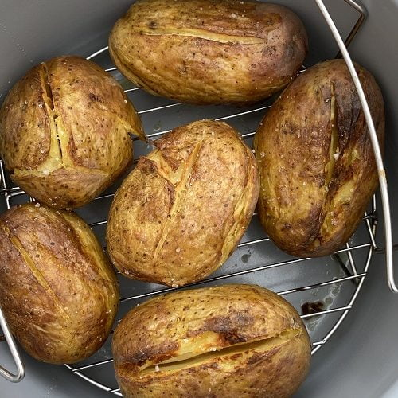

Jacket Potato

Ninja Foodi Baked Potato. Today, we are going to show you how to cook the best ever baked potato in the ninja foodi.
From perfectly tender potatoes to a crispy skin to comforting fillings, we have it covered!
Ingredients:
- 4 Large Potatos
- Pinch of Sea Salt
- Pinch of Pepper
- 1 tbs of Virign Olive Oil
Method:
- Place a cup and a half of water (360ml) into the Ninja Foodi cooking pot and add the trivet. Fork the potatoes, season
with salt and pepper and load onto the trivet. Place the lid on the Ninja Foodi, set the valve to sealing and cook for
20 minutes on pressure cook.
- Release the pressure, drain the water, and slice your potatoes lengthways. Spray your potatoes with extra virgin olive
oil.
- Place down the air fryer lid and air fry for 10 minutes at 200c/400f.
- Serve with your favourite baked potato toppings.
Back to Home